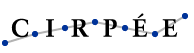

|
DASP Distributive Analysis Stata Package |
|
|
News
|
Main objective of the DASP projectThe main aim of this project is to produce a comprehensive package of STATA modules to help analyze the distribution of living standards. It is hoped that this will be useful for measurement as well as for policy purposes. DASP package is freely distributed and freely available. Please acknowledge its use by quoting it as: Araar Abdelkrim and Jean-Yves Duclos (2007), "DASP: Distributive Analysis Stata Package", PEP, CIRPÉE and World Bank, Université Laval. Features of the DASP Package
Stata and distributive analysisThe STATA software has become a very popular tool to transform and process data. It comes with a large number of basic data management modules that are highly efficient for transformation of large datasets. The flexibility of STATA also enables programmers to provide specialized .ado routines to add to the power of the software. This is indeed how DASP interacts with STATA. DASP, which stands for Distributive Analysis STATA Package, is mainly designed to assist researchers and policy analysts interested in conducting distributive analysis with STATA.
|
|  | |
|
DASP © 2006-2016
|
Home •
About DASP •
Manuals •
Modules •
Examples •
FAQs •
Contact
|